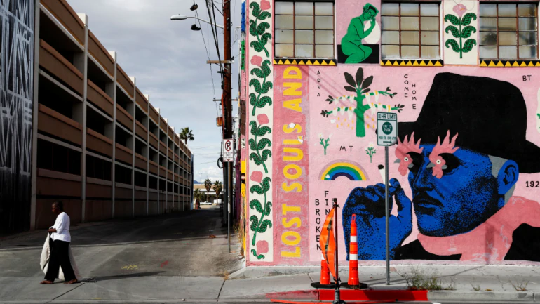

After a widely expected and sharp drop in the U.S. economy over the next three months, a panel of top business economists sees high joblessness persisting for more than a year in an outcome that would douse hopes for a quick, post-pandemic return to normal.The number of jobs destroyed by the U.S. economy's crisis-driven sudden stop could top 4.5 million, according to the median estimate of 45 forecasters surveyed by the National Association for Business Economics.
Fewer than 2 million of those positions will be recovered by the end of 2021, the economists expect, pushing the unemployment rate above 6 percent for the next 21 months in a massive blow to a labour market that had been considered among the best for workers in decades.Panelists believe that the U.S. economy is already in recession and will remain in a contractionary state for the first half of 2020, as the Covid-19 pandemic severely restricts economic activity,” said NABE President Constance Hunter, chief economist for KPMG.
“Conditions will improve by the end of the year with support from aggressive fiscal and monetary stimulus," she said, with annualized growth near 6% by year's end.
But that will follow a devastating contraction in the second quarter of 2020, with the median forecast expecting GDP to fall at an annualized rate of 26.5% for the April to June period.The prognosis is in line with other recent predictions by economists and some Fed officials.
The breadth of the responses to the NABE survey showed the uncertainty economists have about what happens when major parts of an economic system simply shut down, in this case as a result of efforts to stem the spread of the coronavirus. The responses included estimates that second-quarter GDP would fall by a full 50%.
Estimates at the other extreme saw only a 1% fall in second-quarter GDP, and a rocket-like 20% rebound from there with millions of jobs created and unemployment falling quickly.The median outcome of persistent job loss, however, is sobering in the face of the trillions of dollars in new programs the Fed, Congress and the Trump administration have approved in recent weeks to try to keep the economy "whole" through the pandemic and ready to restart once the health crisis passes.